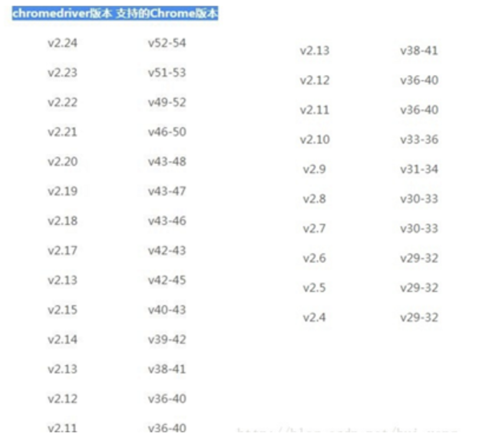

WebDriver概述、 环境搭建
目标
1. 了解WebDriver概述
2. WebDriver环境搭建
1. 什么是WebDriver?
1. Webdriver (Selenium2）是一种用于Web应用程序的自动测试工具；
2. 它提供了一套友好的API；
3. Webdriver完全就是一套类库，不依赖于任何测试框架，除了必要的浏览器驱动;
说明：
API：应用编程接口说明（WebDriver类库内封装非常多的方法，要使用这些方法，就需要友好的调用命名规则）
1.1 WebDriverAPI 支持的浏览器
1. Firefox （FirefoxDriver）【推荐-本阶段学习使用】
2. IE（InternetExplorerDriver）
3. Opera（OperaDriver）
4. Chrome （ChromeDriver）
5. safari（SafariDriver）
6. HtmlUnit (HtmlUnit Driver)
提示：
Firefox、Chrome：对元素定位和操作有良好的支持，同时对JavaScript支持也非常好。
IE:只能在windows平台运行，所有浏览器中运行速度最慢
HtmlUnit：无GUI(界面)运行，运行速度最快；
推荐原因：
1. Selenium IDE
2. FireBug
3. 对WebDriver API支持良好
1.2 WebDriverAPI 支持的开发语言
官网文档：https://docs.seleniumhq.org/docs/03_webdriver.jsp
```3. 环境搭建
- Java
- Python
- PHP
- JavaScript
- Perl
- Ruby
- C# ```
2. 环境搭建
2.1 为什么要环境搭建？
1. 盖房子
2. MP3
3. 开发语言
2.2 基于Python环境搭建
1. Windows系统
2. Python 3.5（以上版本）
3. 安装selenium包
4. 浏览器
5. 安装PyCharm
说明：Python3 和PyCharm咱们上阶段课已使用，在这里不在重复；
2.3 selenium 安装、卸载、查看命令
安装：pip install selenium==2.48.0
1). pip:通用的 Python 包管理工具。提供了对 Python 包的查找、下载、安装、卸载的功能。
2). install: 安装命令
3). selenium==2.48.0: 指定安装selenium2.48.0版本（如果不指定版本默认为最新版本）
卸载：pip uninstall selenium
查看：pip show selenium
注意: 在安装selenium时，前提是Python3.5以上版本安装完毕且能正常运行
2.4 火狐浏览器【推荐】
1. FireFox 48以上版本
Selenium 3.X +FireFox驱动——geckodriver
2. Firefox 48 以下版本
Selenium2.X 内置驱动
2.5 谷歌浏览器
selenium2.x/3.x +Chrome驱动

2.6 浏览器-总结
各个驱动下载地址： http://www.seleniumhq.org/download/
1. 浏览器的版本和驱动版本要一致！
（如果是32bit浏览器而Driver是64bit则会导致脚本运行失败！）
2. 浏览器驱动下载好后需要添加Path环境便令中，或者直接放到Python安装目录，因为Python以添加到Path中
3. 推荐使用火狐浏览器(24、35)版
3. 总结
1. WebDriver是什么？
2. 为什么要搭建环境？
3. selenium 安装、卸载、查看命令
4. 为什么推荐火狐浏览器和火狐48版本以下